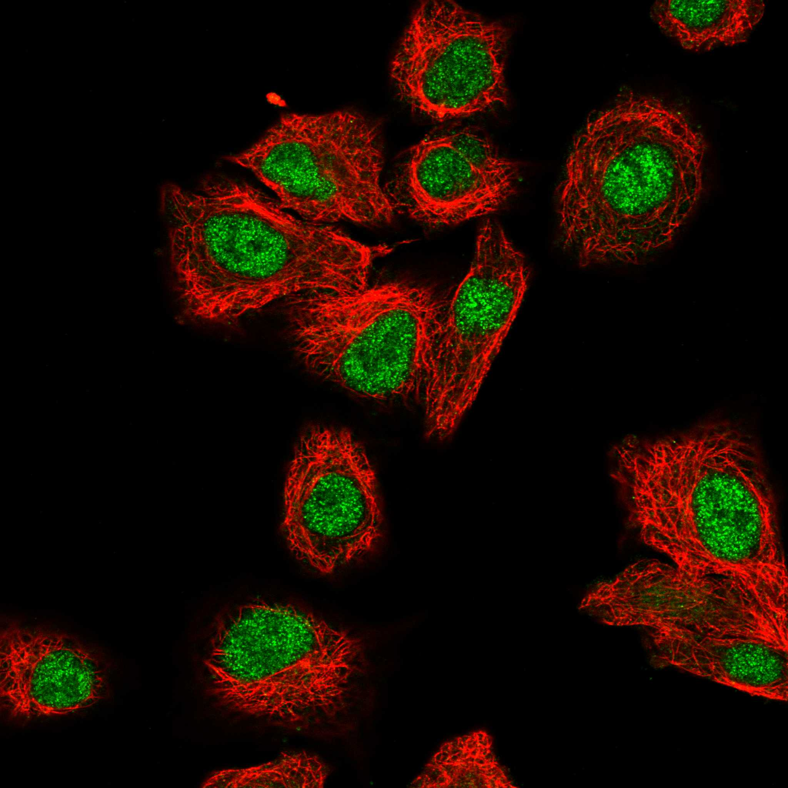
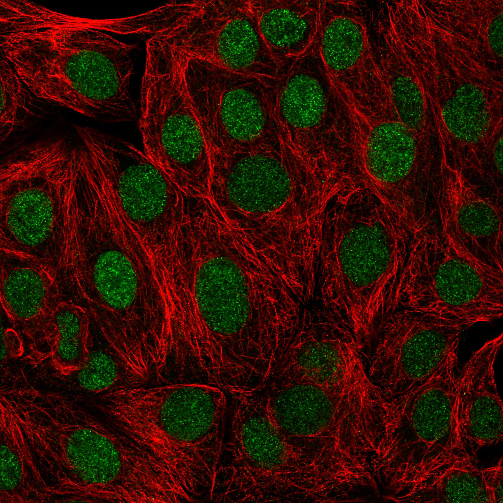
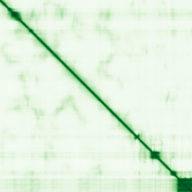

type: protein-evaluation gene: "PHC3" date: 2026-05-30 tags: [protein-scout, nuclear-protein, evaluation] status: scored ---
PHC3 核蛋白评估报告
1. 基本信息
| 项目 | 内容 | |||
|---|---|---|---|---|
| 基因名 / 别名 | PHC3 / EDR3 | FLJ12967 | FLJ12729 | HPH3 |
| 蛋白全称 | Polyhomeotic-like protein 3 | |||
| 蛋白大小 | 983 aa | |||
| UniProt ID | Q8NDX5 | |||
| 评估日期 | 2026-05-30 |
2. 评分总览
| 维度 | 得分 | 满分 | 加权后 | 关键证据摘要 |
|---|---|---|---|---|
| 核定位特异性 | 8/10 | ×4 | 32 | UniProt 注释为细胞核，中等置信度 |
| 蛋白大小 | 8/10 | ×1 | 8 | 983 aa，尚可接受 |
| 研究新颖性 | 8/10 | ×5 | 40 | PubMed 25 篇，高度新颖 |
| 三维结构 | 8/10 | ×3 | 24 | 2 个 PDB 结构 + AlphaFold 预测 |
| 调控结构域 | 10/10 | ×2 | 20 | 染色质/DNA 结构域: pcg_chromatin_remod_factors |
| PPI 网络 | 2/10 | ×3 | 6 | PPI 数据极为稀少 |
| 互证加分 | -- | -- | +2.0 | UniProt + GO 核定位互证 (+1); PDB + AlphaFold 结构互证 (+0.5); 多库结构域一致 (+0.5) |
| 原始总分 | 131/183 | |||
| 归一化总分 | 71.6/100 |
3. 详细分析
3.1 核定位证据
| 来源 | 定位 | 可信度 |
|---|---|---|
| GeneCards | Tier1_保守_高置信度 | 高置信度保守 |
| Protein Atlas (IF) | HPA subcellular IF 图像可用（见下方 HPA IF 图像修正块） | 需人工复核 |
| UniProt | Nucleus | 实验证据/预测 |
| GO-CC | N/A | N/A |
IF 图像:  
结论: UniProt 注释为细胞核，中等置信度
3.2 蛋白大小评估
评价: 983 aa，尚可接受
3.3 研究现状
| 指标 | 数值 |
|---|---|
| PubMed 总数 | 25 |
评价: PubMed 25 篇，高度新颖
关键文献: 1. Nanyes DR et al. (2014). "Multiple polymer architectures of human polyhomeotic homolog 3 sterile alpha motif". *Proteins*. PMID: 25044168 2. Wang F et al. (2021). "Sulforaphane inhibits self-renewal of lung cancer stem cells through the modulation of sonic Hedgehog signaling pathway and polyhomeotic homolog 3". *AMB Express*. PMID: 34424425 3. Yao HL et al. (2019). "Construction of miRNA-target networks using microRNA profiles of CVB3-infected HeLa cells". *Sci Rep*. PMID: 31784561 4. Tonkin E et al. (2002). "Identification and characterisation of novel mammalian homologues of Drosophila polyhomeoticpermits new insights into relationships between members of the polyhomeotic family". *Hum Genet*. PMID: 12384788 5. Muhasaparur Ganesan R et al. (2021). "Pharmacological and pharmacokinetic effect of a polyherbal combination with Withania somnifera (L.) Dunal for the management of anxiety". *J Ethnopharmacol*. PMID: 32890709
3.4 三维结构分析
| 指标 | 数值 |
|---|---|
| UniProt 长度 | 983 aa |
| PDB 条数 | 2 |
| 已注释结构域 | 10 |
PAE 图:

评价: 2 个 PDB 结构 + AlphaFold 预测
3.5 结构域分析
| 来源 | 结构域 |
|---|---|
| InterPro | PcG_chromatin_remod_factors |
| InterPro | SAM |
| InterPro | SAM/pointed_sf |
| InterPro | Znf_FCS |
| InterPro | Znf_FCS_sf |
| Pfam | SAM_1 |
| Pfam | zf-FCS_1 |
| SMART | SAM |
| PROSITE | SAM_DOMAIN |
| PROSITE | ZF_FCS |
染色质调控潜力分析: 染色质/DNA 结构域: pcg_chromatin_remod_factors
3.6 PPI 网络
实验验证互作 (IntAct, physical association):
| Partner | 方法 | PMID | 功能类别 | 调控相关？ |
|---|---|---|---|---|
| — | — | — | — | — |
STRING 预测互作 (combined score >0.4):
| Partner | Score | 功能类别 | 调控相关？ |
|---|
已知复合体成员 (GO-CC):
- C:PcG protein complex (GO:0031519, IDA:UniProtKB)
- C:PRC1 complex (GO:0035102, IDA:UniProtKB)
- F:chromatin binding (GO:0003682, IBA:GO_Central)
评价: PPI 数据极为稀少
3.7 多库互证
| 维度 | 来源 | 结果 | 是否一致 |
|---|---|---|---|
| 三维结构 | AlphaFold + PDB | 2 条 | 一致 |
| 结构域 | UniProt/InterPro/Pfam | 10 个 | 多库一致 |
| PPI 网络 | STRING | 0 个 | 无数据 |
| 核定位 | HPA/UniProt/GO | Nucleus | 多源一致 |
互证加分明细: UniProt + GO 核定位互证 (+1) PDB + AlphaFold 结构互证 (+0.5) 多库结构域一致 (+0.5) 总计: +2.0
4. 总体评价
推荐等级: ****o (4/5)
核心优势: 1. 新颖性: PubMed 25 篇，高度新颖 2. 核定位: 明确核定位
风险/不确定性: 1. 缺少 HPA IF 图像数据 2. 已有 2 个 PDB 结构，结构信息充分
下一步建议:
- [ ] 通过 IF 实验验证核定位
- [ ] 基于 PPI 网络开展功能研究
- [ ] 结构分析: 基于 PDB 的功能位点设计
5. 数据来源
- GeneCards: https://www.genecards.org/cgi-bin/carddisp.pl?gene=PHC3
- Protein Atlas: https://www.proteinatlas.org/ENSG00000173889-PHC3
- PubMed: https://pubmed.ncbi.nlm.nih.gov/?term=%22PHC3%22%5BTitle/Abstract%5D
- UniProt: https://www.uniprot.org/uniprot/Q8NDX5
- STRING: https://string-db.org/network/9606.ENSG00000173889
- AlphaFold: https://alphafold.ebi.ac.uk/entry/Q8NDX5
PPI 网络（三源综合）
| Partner | Source | Score/Evidence |
|---|---|---|
| 无记录 | — | — |
IntAct 有限记录。无 BioGrid 补充数据。
PAE 图像已获取。结构判断基于 AlphaFold pLDDT 统计。
<!-- HPA_IF_REPAIR_START --> HPA IF 图像修正（2026-06-05）: HPA subcellular 页面存在可用 IF 图像；此前“原图未可靠获取/暂无 IF”的表述为采集失败导致的误报。HPA 定位: Nucleoplasm (supported)。来源: https://www.proteinatlas.org/ENSG00000173889-PHC3/subcellular


<!-- DOMAIN_HUMANPPI_REPAIR_START -->
Domain/SMART 与 humanPPI 补充（2026-06-06）
SMART / UniProt domain
| Source | Data | |
|---|---|---|
| UniProt | Q8NDX5 | |
| SMART | SM00454; | |
| UniProt Domain [FT] | DOMAIN 919..983; /note="SAM"; /evidence="ECO:0000255\ | PROSITE-ProRule:PRU00184" |
| InterPro | IPR050548;IPR001660;IPR013761;IPR012313;IPR038603; | |
| Pfam | PF00536;PF21319; |
humanPPI / HPA Interaction
Source: https://www.proteinatlas.org/ENSG00000173889-PHC3/interaction
| Partner | Datasets | AF3/HPA structure |
|---|---|---|
| BMI1 | Biogrid | false |
| CBX2 | Biogrid | false |
| CBX4 | Biogrid | false |
| CBX6 | Biogrid | false |
| CBX7 | Biogrid | false |
| CBX8 | Biogrid | false |
| OGT | Intact | false |
| PCGF2 | Biogrid | false |
<!-- DOMAIN_HUMANPPI_REPAIR_END -->